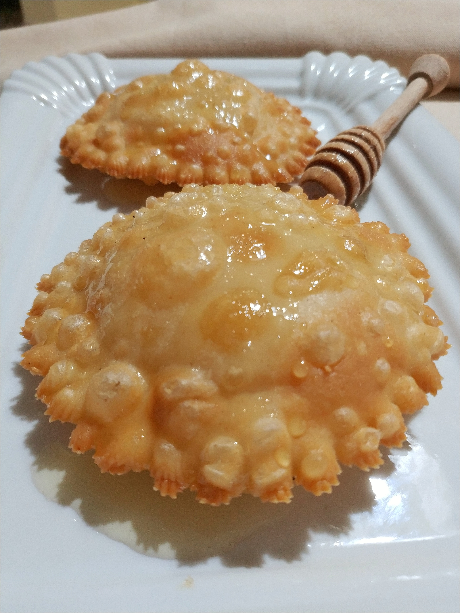

Ricetta Seadas al miele

Descrizione ricetta
Dolce della tradizione sarda, pasta sfoglia ripiena di un mix di formaggi freschi e stagionati, fritta e ricoperta di miele
Ingredienti
Passaggi ricetta
- Preparare l'olio per la frittura
- Mettere a friggere la seada
- Servire il piatto caldo